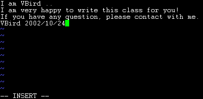

| |
最近更新日期：2005/08/01
本文已不再维护，更新文章请参考此处
|
每个系统管理员都应该至少要学会一种文字接口的字处理器，以方便系统日常的管理行为。
在 Linux 上头的文字处理软件非常的多，不过，鸟哥还是建议使用 vi 这个正规的字处理器。
这是因为 vi 几乎在任何一个 Unix Like 的机器都存在，学会他，轻松很多啊！
而且后来的计划也有推出 vim 这个 vi 的进阶版本，可以用的额外功能更多了！
vi 是未来我们进行 shell script 程序的编写与服务器设定的重要工具喔！
而且是非常非常重要的工具，一定要学会才行啊！ ^_^
|
 vi 与 vim vi 与 vim
由前面一路走来，我们一直建议使用文本模式来处理 Linux 的系统设定问题，因为不但可以让您比较容易了解到
Linux 的运作状况，也比较容易了解整个设定的基本精神，更能『保证』您的修改可以顺利的被运作。
所以， 在 Linux 的系统中使用文本编辑器来编辑您的 Linux
参数配置文件，嗯！可是一件很重要的事情呦！所以说嘛！系统管理员至少应该要熟悉一种字处理器的！
Tips:
这里要再次的强调，不同的 Linux distribution 各有其不同的附加软件，例如
Red Hat 与 Fedora 的 userconf, Linuxconf, ntsysv 与 setup 等等，而 SuSE 则有 YOU 管理工具等等，
因此，如果您只会使用此种类型的软件来控制您的 Linux 系统时，当接管不同的
Linux distributions 时，呵呵！那可就苦恼了！
|  |
由 Linux是什么 介绍中，我们知道 Linux
与 Unix 系统中的参数文件几乎都是 ASCII 码的『纯文本』档！因此，利用简单的文字编辑软件就可以马上修改
Linux 的参数档啰！然而，与 Windows 不同的是，如果您用惯了 Microsoft Word
或 Corel Wordperfect 的话，那么除了 X window 里面的编辑程序(如 xemacs )用起来尚可应付外，于
Linux 的文本模式下，会觉得档案编辑程序都没有 Windows 程序那么方便。
Tips:
还记得什么是纯文本档吗？忘记的话，回到 Linux
的文件属性与目录配置 里头去瞧一瞧先～该文件格式以 ASCII 格式码为主。
说穿了，就是您『不论使用什么编辑器』来开启那个档案时，都可以将内容给您看到，而不是呈现乱码的档案，
那就是纯文本档了！当您以 Windows 的 word 存一个档案时，在 DOS 的情况下使用 type
这个指令来查阅数据，嗯！完全不知到内容是什么？因为会出现很多的乱码，那并非是纯文本档，而如果以
word 在存档时，选择『纯文本类型』，嗯！那就可以使用 type 看到该档案的内容了！
由于纯文本文件在任何操作系统底下都可以被取用，是相当方便的一种设定格式啊！
| |
无论如何，要管理好 Linux 系统时，纯文本的手工设定仍是需要的！那么在 Linux 底下有哪些文书编辑器呢？
可多了～例如 vi, emacs, xemacs, joe, e3, xedit, kedit, pico .... 多的很～
各家处理器各有其优缺点，您当然可以选择任何一个您觉得适用的字处理器来使用。不过，鸟哥还是比较建议使用 vi
啦！这是因为 vi 是 Unix Like 的机器上面默认都有安装的软件，也就是说，您一定可以接触到这个软件就是了。
另外，在较新的 distributions 上，您也可以使用较新较先进的 vim 这个字处理器！
vim 可以看做是 vi 的进阶软件，他可以具有颜色显示，很方便程序开发人员在进行程序的撰写呢！
简单的来说， vi 是老式的字处理器，不过功能已经很齐全了，但是还是有可以进步的地方。
vim 则可以说是程序开发者的一项很好用的工具，就连 vim 的官方网站 ( http://www.vim.org) 自己也说 vim 是一个『程序开发工具』而不是文字处理软件～^_^。
因为 vim 里面加入了很多额外的功能，例如支持正规表示法的搜寻架构、多档案编辑、区块复制等等。
这对于我们在 Linux 上面进行一些配置文件的修订工作时，是很棒的一项功能呢！
底下鸟哥会先就简单的 vi 做个介绍，然后再跟大家报告一下 vim 的额外功能与用法呢！
vi 的使用
基本上 vi 共分为三种模式，分别是『 一般模式』、
『 编辑模式』与『 指令列命令模式』三种！
这三种模式的作用是：
- 一般模式：
以 vi 处理一个档案的时后，一进入该档案就是一般模式了。在这个模式中，
你可以使用『上下左右』按键来移动光标，您可以使用『删除字符』或『删除整行』来处理档案内容，
也可以使用『复制、贴上』来处理您的文件数据。
- 编辑模式：
在一般模式中可以处理删除、复制、贴上等等的动作，但是却无法编辑的！
要等到您按下『i,
I, o, O, a, A, r, R』等字母之后才会进入编辑模式。注意了！通常在
Linux 中，按下上述的字母时，在画面的左下方会出现『 INSERT
或 REPLACE 』的字样，才可以输入任何字来输入到您的档案中！而如果要回到一般模式时，
则必须要按下『Esc』这个按键即可退出编辑模式。
- 指令列命令模式：
在一般模式当中，输入『
: 或 / 或 ? 』就可以将光标移动到最底下那一行，在这个模式当中，
可以提供您『搜寻资料』的动作，而读取、存盘、大量取代字符、离开
vi 、显示行号 等等的动作则是在此模式中达成的！
简单的说，我们可以将这三个模式想成底下的图标来表示之：

图一、 vi 三种模式的相互关系
闲话不多说，我们底下以一个简单的例子来进行说明吧！
简易执行范例
我们怎么使用 vi 建立一个档名为 test.txt 的资料呢？也是很简单的啦，
整个步骤可以是这样：
- 使用 vi 进入一般模式；
[root@linux ~]# vi test.txt
|
直接输入『 vi 档名』即可进入 vi 了！如下图所示，左下角还会显示这个档案目前的状态！如果是新建档案会显示
[New File]，如果是已存在的档案，则会显示目前的文件名、行数与字符数，例如：『"/etc/man.config"
145L, 4614C』

图二、 利用 vi 开启一个档案
- 按下 i 进入编辑模式，开始编辑文字；
在一般模式之中，只要按下 I, o, a 等字符，就可以进入编辑模式了！在编辑模式当中，您可以发现在左下角会出现
–INSERT- 的画面，那就是可以输入任意字符的提示啰！这个时候，键盘上除了
[Esc] 这个按键之外，其他的按键都可以视作为一般的输入按钮了，所以您可以进行任何的编辑啰！
( 注：在 vi 里面， [tab]
这个按钮所得到的结果与空格符所得到的结果是不一样的，特别强调一下！ )

图三、 进入 vi 的编辑模式
- 按下 [ESC] 按钮回到一般模式；
好了，假设我已经按照上面的样式给他编辑完毕了，那么应该要如何退出呢？是的！没错！就是给他按下
[Esc] 这个按钮即可！马上你就会发现画面左下角的 – INSERT – 不见了！
- 在一般模式中按下 :wq 储存后离开 vi ！
OK，我们要存档了，存盘并离开的指令很简单，输入『:wq』即可存档离开！（注意了，按下
: 该光标就会移动到最底下一行去！）这时你在提示字符后面输入『 ls -l 』即可看到我们刚刚建立的
test.txt 档案啦！整个图示有点像底下这样：

图四、利用 vi 储存档案
如此一来，您的档案 test.txt 就已经建立起来啰！很简单吧！需要注意的是，如果您的档案权限不对，例如为
-r--r--r-- 时，那么可能会无法写入，那么可以使用『强制写入』的方式吗？可以！使用『:wq!』
多加一个惊叹号即可！不过，需要特别注意呦！那个是在『您的权限可以改变』的情况下才能成立的！
关于权限的概念，请参考一下 Linux 的档案权限概念 啰！
命令行内容说明
如前所述，所谓的命令行或命令模式，就是在最下面一行没有显示
『 --INSERT--』或者『 --REPLACE--』
字样的时候。通常在命令行中的指令有下面几种：（注意，当按下
『:』 时，光标会自动移动到屏幕的最下面一行！）
| 一般模式：
移动光标的方法 |
| h 或 向左箭头键(←) |
光标向左移动一个字符 |
| j 或 向下箭头键(↓) |
光标向下移动一个字符 |
| k 或 向上箭头键(↑) |
光标向上移动一个字符 |
| l 或 向右箭头键(→) |
光标向右移动一个字符 |
| 如果想要进行多次移动的话，例如向下移动 30 行，可以使用 "30j" 或 "30↓" 的组合按键，
亦即加上想要进行的次数(数字)后，按下动作即可！ |
| [Ctrl] + [f] |
屏幕『向下』移动一页，相当于 [Page Down]按键
(常用) |
| [Ctrl] + [b] |
屏幕『向上』移动一页，相当于 [Page Up] 按键
(常用) |
| [Ctrl] + [d] |
屏幕『向下』移动半页 |
| [Ctrl] + [u] |
屏幕『向上』移动半页 |
| + |
光标移动到非空格符的下一列 |
| - |
光标移动到非空格符的上一列 |
| n<space> |
那个 n 表示『数字』，例如 20 。按下数字后再按空格键，光标会向右移动这一行的 n
个字符。例如 20<space> 则光标会向后面移动 20 个字符距离。 |
| 0 |
这是数字『 0 』：移动到这一行的最前面字符处
(常用) |
| $ |
移动到这一行的最后面字符处(常用) |
| H |
光标移动到这个屏幕的最上方那一行 |
| M |
光标移动到这个屏幕的中央那一行 |
| L |
光标移动到这个屏幕的最下方那一行 |
| G |
移动到这个档案的最后一行(常用) |
| nG |
n 为数字。移动到这个档案的第 n 行。例如 20G 则会移动到这个档案的第 20
行(可配合 :set nu) |
| gg |
移动到这个档案的第一行，相当于 1G 啊！
(常用) |
| n<Enter> |
n 为数字。光标向下移动 n 行(常用) |
| 一般模式：
搜寻与取代 |
| /word |
向光标之下寻找一个字符串名称为 word 的字符串。例如要在档案内搜寻 vbird
这个字符串，就输入 /vbird 即可！
(常用) |
| ?word |
向光标之上寻找一个字符串名称为 word 的字符串。 |
| n |
这个 n 是英文按键。代表『重复前一个搜寻的动作』的意思。举例来说，
如果刚刚我们执行 /vbird 去向下搜寻 vbird 这个字符串，则按下 n 后，会向下继续搜寻下一个名称为 vbird
的字符串。如果是执行 ?vbird 的话，那么按下 n 则会向上继续搜寻名称为 vbird 的字符串！ |
| N |
这个 N 是英文按键。与 n 刚好相反，为『反向』进行前一个搜寻动作。
例如 /vbird 后，按下 N 则表示『向上』搜寻 vbird 。 |
| :n1,n2s/word1/word2/g |
n1 与 n2 为数字。在第 n1 与 n2 行之间寻找 word1 这个字符串，并将该字符串取代为
word2 ！举例来说，在 100 到 200 行之间搜寻 vbird 并取代为 VBIRD 则：
『:100,200s/vbird/VBIRD/g』。(常用) |
| :1,$s/word1/word2/g |
从第一行到最后一行寻找 word1 字符串，并将该字符串取代为
word2 ！(常用) |
| :1,$s/word1/word2/gc |
从第一行到最后一行寻找 word1 字符串，并将该字符串取代为
word2 ！且在取代前显示提示字符给用户确认 (confirm)
是否需要取代！(常用) |
| 一般模式：
删除、复制与贴上 |
| x, X |
在一行字当中，x 为向后删除一个字符 (相当于 [del] 按键)，
X 为向前删除一个字符(相当于 [backspace] 亦即是退格键)
(常用) |
| nx |
n 为数字，连续向后删除 n 个字符。举例来说，我要连续删除 10 个字符，
『10x』。 |
| dd |
删除游标所在的那一整列(常用) |
| ndd |
n 为数字。删除光标所在的向下 n 列，例如 20dd 则是删除 20 列
(常用) |
| d1G |
删除游标所在到第一行的所有数据 |
| dG |
删除游标所在到最后一行的所有数据 |
| d$ |
删除游标所在处，到该行的最后一个字符 |
| d0 |
那个是数字的 0 ，删除游标所在处，到该行的最前面一个字符 |
| yy |
复制游标所在的那一行(常用) |
| nyy |
n 为数字。复制光标所在的向下 n 列，例如 20yy 则是复制 20
列(常用) |
| y1G |
复制游标所在列到第一列的所有数据 |
| yG |
复制游标所在列到最后一列的所有数据 |
| y0 |
复制光标所在的那个字符到该行行首的所有数据 |
| y$ |
复制光标所在的那个字符到该行行尾的所有数据 |
| p, P |
p 为将已复制的数据在光标下一行贴上，P 则为贴在游标上一行！
举例来说，我目前光标在第 20 行，且已经复制了 10 行数据。则按下 p 后，
那 10 行数据会贴在原本的 20 行之后，亦即由 21 行开始贴。但如果是按下 P 呢？
那么原本的第 20 行会被推到变成 30 行。
(常用) |
| J |
将光标所在列与下一列的数据结合成同一列 |
| c |
重复删除多个数据，例如向下删除 10 行，[ 10cj ] |
| u |
复原前一个动作。(常用) |
| [Ctrl]+r |
重做上一个动作。(常用) |
| 这个 u 与 [Ctrl]+r 是很常用的指令！一个是复原，另一个则是重做一次～
利用这两个功能按键，您的编辑，嘿嘿！很快乐的啦！ |
| . |
不要怀疑！这就是小数点！意思是重复前一个动作的意思。
如果您想要重复删除、重复贴上等等动作，按下小数点『.』就好了！
(常用) |
| 进入编辑模式 |
| i, I |
插入：在目前的光标所在处插入输入之文字，已存在的文字会向后退；
其中， i 为『从目前光标所在处插入』， I 为『在目前所在行的第一个非空格符处开始插入』。
(常用) |
| a, A |
a 为『从目前光标所在的下一个字符处开始插入』， A
为『从光标所在行的最后一个字符处开始插入』。(常用) |
| o, O |
这是英文字母 o 的大小写。o 为『在目前光标所在的下一行处插入新的一行』；
O 为在目前光标所在处的上一行插入新的一行！(常用) |
| r, R |
取代：r 会取代光标所在的那一个字符；R会一直取代光标所在的文字，直到按下
ESC 为止；(常用) |
| 上面这些按键中，在 vi 画面的左下角处会出现『--INSERT--』或『--REPLACE--』的字样。
由名称就知道该动作了吧！！特别注意的是，我们上面也提过了，你想要在档案里面输入字符时，
一定要在左下角处看到 INSERT/REPLACE 才能输入喔！ |
| Esc |
退出编辑模式，回到一般模式中(常用) |
| 指令列命令模式 |
| :w |
将编辑的数据写入硬盘档案中(常用) |
| :w! |
若文件属性为『只读』时，强制写入该档案。不过，到底能不能写入，
还是跟您对该档案的档案权限有关啊！ |
| :q |
离开 vi (常用) |
| :q! |
若曾修改过档案，又不想储存，使用 ! 为强制离开不储存档案。 |
| 注意一下啊，那个惊叹号 (!) 在 vi 当中，常常具有『强制』的意思～ |
| :wq |
储存后离开，若为 :wq! 则为强制储存后离开
(常用) |
| :e! |
将文件还原到最原始的状态！ |
| ZZ |
若档案没有更动，则不储存离开，若档案已经经过更动，则储存后离开！ |
| :w [filename] |
将编辑的数据储存成另一个档案（类似另存新档） |
| :r [filename] |
在编辑的数据中，读入另一个档案的数据。亦即将 『filename』
这个档案内容加到游标所在行后面 |
| :n1,n2 w [filename] |
将 n1 到 n2 的内容储存成 filename 这个档案。 |
| :! command |
暂时离开 vi 到指令列模式下执行 command 的显示结果！例如
『:! ls /home』即可在 vi 当中察看 /home 底下以 ls 输出的档案信息！ |
| :set nu |
显示行号，设定之后，会在每一行的前缀显示该行的行号 |
| :set nonu |
与 set nu 相反，为取消行号！ |
特别注意， 在 vi 中，『数字』是很有意义的！数字通常代表重复做几次的意思！
也有可能是代表去到第几个什么什么的意思。举例来说，要删除 50 行，则是用 『50dd』 对吧！
数字加在动作之前～那我要向下移动 20 行呢？那就是『20j』或者是『20↓』即可。
OK！会这些指令就已经很厉害了，因为常用到的指令也只有不到一半！通常 vi
的指令除了上面鸟哥注明的常用的几个外，其他是不用背的，你可以做一张简单的指令表在你的屏幕墙上，
一有疑问可以马上的查询呦！
一个案例练习
来来来！测试一下您是否已经熟悉 vi 这个指令呢？请依照底下的需求进行您的指令动作。
(底下的操作为使用 FC4 的预设档案来进行练习的。您可以在这里下载：
http://linux.vbird.org/linux_basic/0310vi/man.config-fc4。)
看看您的显示结果与鸟哥的结果是否相同啊？！
- 请在 /tmp 这个目录下建立一个名为 vitest 的目录；
- 进入 vitest 这个目录当中；
- 将 /etc/man.config 拷贝到本目录底下(或由上述的连结下载 man.config 档案)；
- 使用 vi 开启本目录下的 man.config 这个档案；
- 在 vi 中设定一下行号；
- 移动到第 58 行，向右移动 40 个字符，请问您看到的双引号内是什么目录？
- 移动到第一行，并且向下搜寻一下『 bzip2 』这个字符串，请问他在第几行？
- 接着下来，我要将 50 到 100 行之间的 man 改为 MAN，并且一个一个挑选是否需要修改，如何下达指令？
- 修改完之后，突然反悔了，要全部复原，有哪些方法？
- 我要复制 51 到 60 行这十行的内容，并且贴到最后一行之后；
- 删除 11 到 30 行之间的 20 行；
- 将这个档案另存成一个 man.test.config 的檔名；
- 去到第 29 行，并且删除 15 个字符；
- 储存后离开吧！
整个步骤可以如下显示：
- 『mkdir /tmp/vitest』
- 『cd /tmp/vitest』
- 『cp /etc/man.config .』
- 『vi man.config』
- 『:set nu』
- 先按下『58G』再按下『40→』会看到『/dir/bin/foo』这个字样在双引号内；
- 先执行『1G』或『gg』后，直接输入『/bzip2』，则会去到第 116 行才对！
- 直接下达『 :50,100s/man/MAN/gc 』即可！
- (1)简单的方法可以一直按『 u 』回复到原始状态，(2)使用不储存离开『 :q! 』之后，再重新读取一次该档案；
- 『51G』 然后再『 10yy 』之后按下『 G 』到最后一行，再给他『 p 』贴上十行！
- 『11G』 之后，再给他『 20dd 』即可删除 20 行了；
- :w man.test.config
- 『29G』 之后，再给他『 15x 』即可删除 15 个字符；
- 『:wq!』
如果您的结果都可以查的到，那么 vi 的使用上面应该没有太大的问题啦！剩下的问题会是在…..打字练习…。
关于档案的回复与暂存盘
另外，其实 vi 是具有『可回复』功能的呢！那么 vi 凭什么帮我们进行回复的功能呢？
很简单啊！凭暂存档啊！举例来说，当我们编辑一个档案时，假设名称为 /tmp/passwd ，
那么在这个 /tmp 底下就会有一个临时文件，档名为『 /tmp/.passwd.swp 』，这是一个隐藏档，
我们所进行的一些修改都会暂时存在这个档案当中，万一在档案修改过程中，
系统挂了，那么下次你再重新 vi /tmp/passwd 时，系统就会告诉您，是否需要回复『Recovery』成修改过程中的模样？
如果您按下 (R) ，嘿嘿！就可以将数据回复到修改过程的样子，而不是源文件啰！
这是个很有用的功能喔！ ^_^
这也就是说，如果有一天，您去 /tmp 底下，执行 ls -al 时，发现到底下有两个档案，
档名分别为 passwd 与 .passwd.swp 的话，那么 (1) 可能有人在编辑这个档案；
(2) 之前您在编辑这个档案时，因为某些不知名的因素导致 vi 程序中断，则该暂存档就会存在。
如果是状态 (2) ，则此时您可以将该 .passwd.swp 档案删除，或者是，直接 vi /tmp/passwd ，
在 vi 出现是否回复时，选择回复，然后储存更新 /tmp/passwd ，之后再将这个 /tmp/.passwd.swp 档案删除即可！
如果不删除的话，那么每次编辑这个档案，都会告知您该档案有问题啊！ @_@
vim 的额外功能
其实，目前大部分的 distributions 都以 vim 取代 vi 的功能了！
如果您使用 vi 后，却看到画面的右下角有显示目前光标所在的行列号码，
那么您的 vi 已经被 vim 所取代啰～
为什么要用 vim 呢？因为 vim 具有颜色显示的功能，并且还支持许多的程序语法 (syntax)，
因此，当您使用 vim 编辑程序时( 不论是 C 语言，还是 shell script )，
我们的 vim 将可帮您直接进行『程序除错 (debug)』的功能！真的很不赖吧！^_^
如果您在文本模式下，输入 alias 时，出现这样的画面：
[root@linux ~]# alias
alias vi='vim'
|
这表示当您使用 vi 这个指令时，其实就是执行 vim 啦！如果您没有这一行，那么您就必须要使用 vim filename
来启动 vim 啰！基本上， vim 的一般用法与 vi 完全一模一样～没有不同啦！那么我们就来看看 vim
的画面是怎样啰！假设我想要编辑 /etc/man.config ，则输入『 vim /etc/man.config』
#
# Generated automatically from man.conf.in by the
# configure script.
#
# man.conf from man-1.5p
#
# For more information about this file, see the man pages man(1)
# and man.conf(5).
"man.config" 138L, 4506C 1,1 Top
|
上面的图示是 vim 一画面一角～他有几个特色要讲：
- 最底下一行说明这个档案的特色，包括 138 行，共 4506 字符等等。
- 那个 1,1 代表目前光标在第一行的第一个字符上。您可以看到第一行有个光标的存在啊！
- 那个 Top 则表示，这个画面是整个档案的最上方！
至少就有这些信息。而在您移动光标时，那个 1,1 的游标定位也会跟着变动，是否很方便啊！
好了，底下我们就来谈一谈其他 vim 的用法吧！
区块选择(Visual Block)
刚刚我们提到的简单的 vi 操作过程中，几乎提到的都是以行为单位的操作。那么如果我想要搞定的是一个区块范围呢？
举例来说，像底下这种格式的档案：
192.168.1.1 host1.class.net
192.168.1.2 host2.class.net
192.168.1.3 host3.class.net
192.168.1.4 host4.class.net
.....中间省略......
|
这个档案我将他放置到 http://linux.vbird.org/linux_basic/0310vi/hosts
，您可以自行下载来看一看这个档案啊！
如果我想要复制的只是前面的 IP 数字部分，后面的主机名部分就不给他复制，那怎么办？
这个时候就得需要使用区块选择(Visual Block)的功能了。当我们按下 v 或者 V 或者 [Ctrl]+v 时，
这个时候光标移动过的地方就会开始反白，这三个按键的意义分别是：
| 区块选择的按键意义 |
| v | 字符选择，会将光标经过的地方反白选择！ |
| V | 行选择，会将光标经过的行反白选择！ |
| [Ctrl]+v | 区块选择，可以用长方形的方式选择资料 |
| y | 将反白的地方复制起来 |
| d | 将反白的地方删除掉 |
我们以上面的 IP 对应主机名为范例，如果想要复制的是 IP 的话，而且仅想要前面四行，
那么我可以：
- 将光标移动到第一行的第一个字符 ( 1G )；
- 然后按下 [Ctrl]+v (按着 [ctrl] 不放，再按下 v )；
- 然后移动箭头键，向下向右移动数格，让整个反白区域涵盖 191.168.1.1 到 192.168.1.4 ；
- 按下 y 复制 (此时反白会自动的不见) ；
- 移动到任何想要插入的区域，按下 p 就可以插入刚刚复制的区块内容！举例来说，移动到第
1 行的第 13 个字符处按下小写的 p ，看看会怎样？
这个区块选择在已经格式的档案中，就会显的很有帮助喔！尤其是我们想要大量复制其中一个区块，
而不是整行复制的场合中，就会很有用的啦！
多档案编辑
假设一个例子，你想要将刚刚我们的 hosts 内的 IP 复制到您的 /etc/hosts 这个档案去，
那么该如何编辑？我们知道在 vi 内可以使用 :r filename 来读入某个档案的内容，
不过，这样毕竟是将整个档案读入啊！如果我只是想要部分内容呢？呵呵！这个时候多档案同时编辑就很有用了。
我们可以使用 vim 后面同时接好几个档案来同时开启喔！相关的按键有：
| 多档案编辑的按键 |
| :n | 编辑下一个档案 |
| :N | 编辑上一个档案 |
| :files | 列出目前这个 vim 的开启的所有档案 |
这个功能也很棒啊！现在您可以做一下练习看看说！假设您要将刚刚鸟哥提供的 hosts 内的 IP 复制到您的
/etc/hosts 档案内，那可以怎么进行呢？可以这样啊：
[root@linux ~]# vi hosts /etc/hosts
# 在这个档案中利用上个小节提到的区块选择，按下 [ctrl]+v 来进行区块选择，并复制。
# 然后按下 :n 在指令列的地方输入这玩意儿，就会转到下一个档案去，这个时候，
# 就可以按下 p 将刚刚复制的 IP 给贴到您的档案中啰！如果您按下 :files ，则：
192.168.1.4 host4.class.net
192.168.1.5 host5.class.net
~
~
:files
1 %a "hosts" line 1
2 # "/etc/hosts" line 1
Hit ENTER or type command to continue
# 看到否？在指令列输入 :files 就可以显示目前所编辑的档案信息啰！
|
看到了吧？利用多档案编辑的功能，可以让您很快速的就将需要的资料复制到正确的档案内。
当然啰，这个功能也可以利用窗口接口来达到，那就是底下要提到的多窗口功能。
多窗口功能
想象两个情况：
- 当我有一个档案非常的大，我查阅到后面的数据时，想要『对照』前面的数据，
是否需要使用 [ctrl]＋f 与 [ctrl]+b 来跑前跑后查阅？
- 我有两个需要对照着看的档案，不想使用前一小节提到的多档案编辑功能；
这样的情况下，开一个 vim 里头有两个窗口的环境，就有需要啦！那么如何开启新窗口呢？
很简单啊！在指令列模式输入：『:sp {filename}』，那个 filename 可有可无，
如果想要在新窗口启动另一个档案，就加入档名，否则仅输入 :sp 时，
出现的则是同一个档案在两个窗口间！例如鸟哥使用 vim hosts 后，再以 :sp /etc/hosts ，
结果出现如下图示：
# Do not remove the following line, or various programs
# that require network functionality will fail.
127.0.0.1 localhost.localdomain localhost
192.168.1.11 vbird-work
192.168.1.2 vbird-server
~
/etc/hosts 5,1 All
192.168.1.1 host1.class.net
192.168.1.2 host2.class.net
192.168.1.3 host3.class.net
192.168.1.4 host4.class.net
192.168.1.5 host5.class.net
hosts 1,1 Top
|
怎样？帅吧！两个档案同时在一个屏幕上面显示，您还可以利用『[ctrl]+w+j』及『[ctrl]+w+k』
在两个窗口之间移动呢！这样的话，复制啊、查阅啊等等的，就变的很简单啰～
指令的功能有很多，不过，您只要记得这几个就好了：
| 多窗口情况下的按键功能 |
| :sp [filename] | 开启一个新窗口，如果有加 filename，
表示在新窗口开启一个新档案，否则表示两个窗口为同一个档案内容(同步显示)。 |
| [ctrl]+wj | 按键的按法是：先按下 [ctrl] 不放，
再按下 w 后放开所有的按键，然后再按下 j ，则光标可移动到下方的窗口。 |
| [ctrl]+wk | 同上，不过光标移动到上面的窗口。 |
| [ctrl]+wq | 其实就是 :q 结束离开啦！
举例来说，如果我想要结束下方的窗口，那么利用 [ctrl]+wj 移动到下方窗口后，按下 :q 即可离开，
也可以按下 [ctrl]+wq 啊！ |
vim 环境设定
有没有发现，如果我们以 vim 软件来搜寻一个档案内部的某个字符串时，这个字符串会被反白，
而下次我们再次以 vim 编辑这个档案时，该搜寻的字符串还是存在呢！甚至于，
编辑其他档案时，如果其他档案也存在这个字符串，哇！！竟然还是主动反白耶！
另外，当我们重复编辑同一个档案时，当第二次进入该档案时，
游标竟然就在上次离开的那一行上头呢！真是好方便啊～但是，怎么会这样呢？
这是因为我们的 vim 会主动的将您曾经做过的行为登录下来，好让您下次可以轻松的作业啊！
那个记录动作的档案就是： ~/.viminfo
这个档案啦！每个人的家目录都应该会存在这个档案才对～这个档案是自动产生的，
您不必自行建立。而你在 vim 里头所做过的动作，就可以在这个档案内部查询到啰～ ^_^
此外，某些 distributions 的 vim 当中，利用搜寻时，他并不会显示反白，
有些 distributions 则会主动的帮您进行缩排的行为 ( 所谓的缩排，
就是当您按下 Enter 编辑新的一行时，光标不会在行首，而是在与上一行的第一个非空格符处对齐！)。
这些其实都可以进行设定的，那就是 vim 的环境设定啰～
vim 的环境设定参数有很多，如果您想要知道目前的设定值，可以在一般模式时输入：『 :set all 』
来查阅，不过.....设定项目实在太多了～所以，鸟哥在这里仅列出一些平时比较常用的一些简单的设定值，
提供给您参考啊：
| vim 的环境设定参数 |
| :set nu | 还记得这个吧？！就是设定行号啊！取消的话，就是
:set nonu |
| :set hlsearch | 这个就是设定是否将搜寻的字符串反白的设定值。
默认值就是 hlsearch ，如果不想要反白，就 :set nohlsearch 。 |
| :set autoindent | 是否自动缩排？autoindent 就是自动缩排，
不想要缩排就 :set noautoindent 。 |
| :set backup | 是否自动储存备份档？一般是 nobackup 的，
如果设定 backup 的话，那么当你更动任何一个档案时，则源文件会被另存成一个档名为 filename~ 的档案。
举例来说，我们编辑 hosts ，设定 :set backup ，那么当更动 hosts 时，在同目录下，就会产生 hosts~
文件名的档案，记录原始的 hosts 档案内容～ |
| :set ruler | 还记得我们提到的右下角的一些状态栏说明吗？
这个 ruler 就是在显示或不显示该设定值的啦！ |
| :set showmode | 这个则是，是否要显示 --INSERT--
之类的字眼在左下角的状态栏。 |
| :set backspace=(012) | 一般来说，
如果我们按下 i 进入编辑模式后，可以利用退格键 (backspace) 来删除任意字符的。
但是，某些 distribution 则不许如此。此时，我们就可以透过 backspace 来设定啰～
当 backspace 为 2 时，就是可以删除任意值；0 或 1 时，仅可删除刚刚输入的字符，
而无法删除原本就已经存在的文字了！ |
| :set all | 显示目前所有的环境参数设定值。 |
| :syntax (off|on) | 是否依据程序相关语法显示不同颜色？
举例来说，在编辑一个纯文本档时，如果开头是以 # 开始，那么该行就会变成蓝色。
如果您懂得写程序，那么这个 :syntax on 还会主动的帮您除错呢！但是，
如果您仅是编写纯文本档案，要避免颜色对您的屏幕产生的干扰，则可以取消这个设定 :syntax off 。 |
总之，这些设定值很有用处的啦！但是......我是否每次使用 vim 都要重新设定一次各个参数值？
这不太合理吧？！没错啊！所以，我们可以透过配置文件来直接规定我们习惯的 vim 操作环境呢！
整体 vim 的设定值一般是放置在 /etc/vimrc 这个档案，不过，不建议您修改他！
你可以修改 ~/.vimrc 这个档案 (预设不存在，请您自行手动建立！)，将您所希望的设定值写入！
举例来说，可以是这样的一个档案：
[root@linux ~]# vi ~/.vimrc
:set hlsearch
:set backspace=2
:set autoindent
:set ruler
:set showmode
:syntax on
|
这样，当您下次重新以 vim 编辑某个档案时，该档案的预设环境设定就是上头写的啰～
这样，是否很方便您的操作啊！多多利用 vim 的环境设定功能呢！^_^
利用 vi 编辑前面章节的练习
我们前面提到很多的数据，例如 man 与
updatedb 等等的内容，对于配置文件都是简单的提过而已。
在这里，我们就透过 vi 的编辑功能，来直接对我们前面提到的章节来进行一些练习吧！OK！来啰～
例题一：我今天自己安装了一套软件，这套软件的 man page 放置在 /opt/vbirdsoft/man 这个目录下，
那我希望未来只要输入类似 man vbirdcommand 就可以查阅到我这个软件的说明文件，该如何是好？
答：我以 FC4 为例， FC4 的 man page 配置文件在 /etc/man.config 底下我可以找到该档案大约 47 行的地方，
新增如下的资料：
MANPATH /opt/vbirdsoft/man
储存后离开，从此以后，就可以查询到属于我自己的指令的联机帮助文件了。
|
例题二：我知道查询档案可以利用 locate 来进行查询，但是，
该程序必须要配合数据库的更新才行 (updatedb)。现在，我想让我的 FC4 每天进行档案数据库的更新，
并且『不要更新 /var/cache 』这个目录，该如何是好？
答：以 FC4 为例，他的 updatedb 数据库更新配置文件在 /etc/updatedb.conf 这个档案中。
我以 vi 开启这个档案后将该档案修订成为：
DAILY_UPDATE=yes
PRUNEFS="selinuxfs usbdevfs NFS nfs afs sfs smbfs cifs autofs auto iso9660 udf"
PRUNEPATHS="/tmp /usr/tmp /var/spool/cups /var/spool/squid /var/tmp /afs /net /sfs
/selinux /udev /media /var/cache"
上列粗体部分为新加入的部分。那个 DAILY_UPDATE=yes 代表每日进行更新，至于 PRUNEPATHS 后面则接『不要更新的目录』，
所以，这样就能够达到我们的需求啰！
|
例题三：在 partition 格式化的那个章节中，假设我有一个 partition 为 /dev/hdb5 ，
这个 partition 挂载到 /disk2 上面，且目录 /disk2 已经建立好了。该 partition 使用的 filesystem 为 ext3 ，
请问，如果我想要在开机的时候就挂载这个 partition ，该怎么办？
答：开机挂载可以修改 /etc/fstab 这个档案，我在这个档案新增如下信息即可：
/dev/hdb5 /disk2 ext3 defaults 2 2
这样修改完毕后，下达 mount -a 测试看看能否正确挂载，之后就可以开机自动挂载啰～
|
vi 很重要的啦！上面的配置文件都与 vi 编辑有关呢！重要重要喔！ ^_^
DOS 与 Linux 的断行字符
我们在 Linux 档案与目录管理 谈到
cat 时，曾经提到过 DOS 与 Linux 断行字符的不同。
而我们也可以利用 cat -A 来观察以 DOS (Windows 系统) 建立的档案的特殊格式，
也可以发现在 DOS 使用的断行字符为 ^M$ ，我们称为 CR 与 LF 两个符号。
而在 Linux 底下，则是仅有 LF ($) 这个断行符号。这个断行符号对于 Linux 的影响很大喔！
为什么呢？
我们说过，在 Linux 底下的指令在开始执行时，他的判断依据是 『Enter』，而 Linux 的 Enter 为 LF 符号，
不过，由于 DOS 的断行符号是 CRLF ，也就是多了一个 ^M 的符号出来，
在这样的情况下，如果是一个 shell script 的程序档案，呵呵～将可能造成『程序无法执行』的状态～
因为他会误判程序所下达的指令内容啊！这很伤脑筋吧！
那怎么办啊？很简单啊，将格式转换成为 Linux 即可啊！『废话』，这当然大家都知道，但是，
要以 vi 进入该档案，然后一个一个删除 CR 吗？当然没有这么没人性啦！
我们可以透过简单的指令来进行格式的转换啊！
[root@linux ~]# dos2unix [-kn] file [newfile]
[root@linux ~]# unix2dos [-kn] file [newfile]
参数：
-k ：保留该档案原本的 mtime 时间格式 (不更新档案上次内容经过修订的时间)
-n ：保留原本的旧档，将转换后的内容输出到新档案，如： dos2unix -n old new
范例：
范例一：将我们提供的 hosts 文件格式更新为 dos 格式。
[root@linux ~]# unix2dos -k hosts
unix2dos: converting file hosts to DOS format ...
# 此时 hosts 这个档案的时间不会改变，但是内容主要将断行字符修改成为 DOS 的 CRLF 了。
范例二：将范例一已经变成 DOS 格式的 hosts 改名成为 hosts.dos ，并且转换 Linux
格式到 hosts.linux
[root@linux ~]# mv hosts hosts.dos
[root@linux ~]# dos2unix -k -n hosts.dos hosts.linux
dos2unix: converting file hosts.dos to file hosts.linux in UNIX format ...
[root@linux ~]# ll
-rw-r--r-- 1 root root 288 Aug 1 13:30 hosts.dos
-rw------- 1 root root 279 Aug 1 13:30 hosts.linux
# 嘿嘿！由于 DOS 格式当中多了 CR 字符，所以，档案比较大的啦！
|
因为断行字符以及 DOS 与 Linux 操作系统底下一些字符的定义不同，因此，
不建议您在 Windows 系统当中将档案编辑好之后，才上传到 Linux 系统，会容易发生错误问题。
而且，如果您在不同的系统之间复制一些纯文本档案时，千万记得要使用 unix2dos 或 dos2unix 来转换一下格式啊！
本章与 LPI 的关系：
在 http://www.lpi.org
所提供的 topic 当中， LPI 101 的 Topic 103 之 1.103.8 提到：『 应试者应该能够学会使用
vi 文书编辑器，学习的目标包含了 vi 的插入、编辑、删除、复制与搜寻等功能的练习！』至于使用到的指令与
vi 当中所会用到的数据与指令为：
- vi
- /, ? (请看搜寻部分)
- h, j, k, l (移动光标的部分，这个较常考！)
- G, H, L (移动光标的部分)
- i, c, d, dd, p, o, a (删除、编辑与贴上的部分)
- ZZ, :w!, :q!, :e!
- :!
本章习题练习：
(要看答案请将鼠标移动到『答：』底下的空白处，按下左键圈选空白处即可察看)
- 我要在某个档案的第 34 行向右移动 15 个字符，应该在一般模式下达什么指令？
- 先按下 34G 到第 34 行；
- 再按下 [ 15 + 向右键 ]，或 [ 15l ] 亦可！
- 在 vi 里面， PageDown 按钮可以使用什么组合键来取代？
[Ctrl] + f 可以向后翻一页
- 如何去到 vi 该档案里面的页首或页尾？
去页首按下 1G ；去页尾按下 G 即可
- 如何在一行中，移动到行头及行尾？
移动到行头，按 0 ，移动到行尾按 $ 即可！
- vi 里面， r 有什么功能？
取代光标所在的那个字符
- 如何将目前的页面另存新档？
:w filename
- 在 linux 底下最常使用的文书编辑器为 vi ，请问如何进入编辑模式？
在一般模式底下输入： i, I, a, A 为在本行当中输入新字符；(出现 –Insert- )
在一般模式当中输入： o, O 为在一个新的一行输入新字符；
在一般模式当中输入： r, R 为取代字符！（左下角出现 –Replace-）
- 如何由编辑模式跳回一般模式？
可以按下[Esc]
- 若上下左右键无法使用时，请问如何在一般模式移动光标？
[h, j, k, l]分别代表[左、下、上、右]
- 若 [pagedown] [ pageup] 在一般模式无法使用时，如何往前或往后翻一页？
向下翻 [Ctrl] + [f]
向前翻 [Ctrl] + [b]
- 如何到本档案的最后一行、第一行；本行的第一个字符、最后一个字符？
分别为：G, 1G, 0, $
- 如何删除一行、n行；如何删除一个字符？
分别为 dd, ndd, x 或 X （dG 及 d1G 分别表示删除到页首及页尾）
- 如何复制一行、n行并加以贴上？
分别为 yy, nyy, p 或 P
- 如何搜寻 string 这个字符串？
?string (往前搜寻)
/string (往后搜寻)
- 如何取代 word1 成为 word2，而若需要使用者确认机制，又该如何？
:1,$s/word1/word2/g 或
:1,$s/word1/word2/gc （需要使用者确认）
- 如何读取一个档案 filename 进来目前这个档案？
:r filename
- 如何另存新档成为 newfilename？
:w newfilename
- 如何存档、离开、存档后离开、强制存档后离开？
:w； :q： :wq； :wq!
- 在 vi 底下作了很多的编辑动作之后，却想还原成原来的档案内容，应该怎么进行？
直接按下 :e! 即可恢复成档案的原始状态！
- 我在 vi 这个程序当中，不想离开 vi ，但是想执行 ls /home 这个指令，vi 有什么额外的功能可以达到这个目的：
事实上，可以使用[ :! ls /home ]不过，如果你学过后面的章节之后，你会发现，执行[ ctrl + z ]亦可暂时退出
vi 让你在指令列模式当中执行指令喔！
- 如何设定与取消行号？
:set nu
:set nonu
参考数据
2002/04/05：第一次完成
2003/02/07：重新编排与加入 FAQ
2003/02/25：新加入本章节与 LPI 的相关性说明！
2005/07/28：将旧文章移动到 这里 。
2005/08/01：加入果正兄文章的参考，还有查阅 vim 官方网站的数据！
|
|